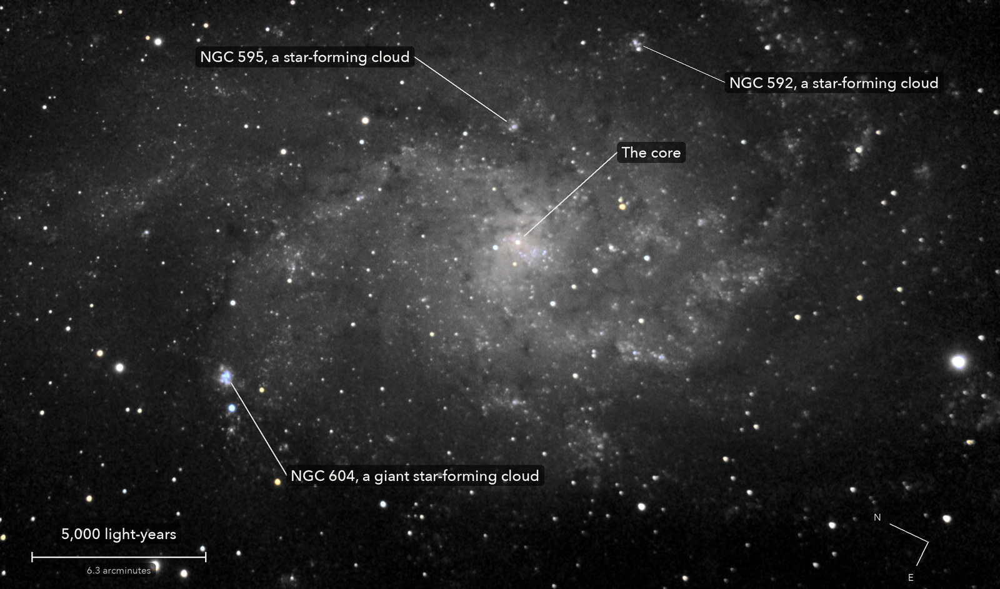

The Triangulum Galaxy
Messier 33, a spiral galaxy in Triangulum
A whole galaxy of about 40 billion stars, the third largest in our Local Group after Andromeda and our own Milky Way. It is bigger on the sky than the camera sees: this is its middle and inner arms. The bright knots along the arms are clouds where new stars are being born; the biggest, NGC 604, is one of the largest star-forming clouds known.
What you are looking at

Swipe sideways to see the rest. Tap the picture for full size.
- Distance
- About 2.7 million light-years (estimates run 2.6 to 3.0 million)
- This picture spans
- About 29,000 light-years; one pixel is about 10 light-years, and NGC 604 alone is about 1,500 light-years across
- The light left
- About 2.7 million years ago, around when the first stone tools were made in East Africa
- Honest note
- The galaxy fills every frame, so there is no empty sky to set black by: the darkest part of the picture is still galaxy. The outer arms that deep pictures show reach past the edges
Photography notes
267 of 342 frames of 15 s, from two nights. 1.1 hours of light from two nights, the camera moved a little between frames.
Equipment
- Telescope
- Celestron 8SE Schmidt-Cassegrain: 203 mm aperture, 2,082.9 mm focal length by plate solve of this stack, f/10.3
- Camera
- Sony a6000, stock, at prime focus: APS-C 23.5 x 15.6 mm, 6000 x 4000, 3.9 micron pixels, RAW
- Mount
- Sky-Watcher EQ6-R, unguided. Set down about 10 degrees off the pole tonight; aligned from plate-solved photos, both axes driven from that model. Dithered between frames for most of tonight
Acquisition
- Exposures
- 267 x 15 s at ISO 3200: 66.8 minutes. Tonight 208 frames, 52.0 minutes in three turns; 13 October 59 frames, 14.8 minutes
- Frames
- 342 taken, 267 kept. Tonight, held still: 53 of 63; dithered: 26 of 30; after Saturn, dithered: 129 of 143. 13 October: 59 of 106. Dropped tonight: 21 smeared (every star stretched the same way; 7 of them the first frame after a dither move, one when someone was at the telescope), 2 with soft stars, 3 the first frame after a slew, 2 taken too soon after a move. Dropped on 13 October: 43 trailed or soft (the tracking let go now and then until it was fixed during that run), 3 the first frame after a slew, 1 too soon after a move
- Dithering
- Tonight's first turn held still (the field drifted about 2.5 arcmin). The second moved between frames in a spiral up to 1.5 arcmin. The turn after Saturn moved every 3 frames, small probe steps and then up to 4 arcmin from the start (the last place nearly 5): a bug in the sensor map chose the 4, and it was kept because it widened the field the frames cover. 13 October was not dithered
- Sampling
- 0.776 arcsec per pixel: one pixel per 2 x 2 colour cell, never enlarged. Stars 4.5 arcsec wide (half-flux) in the stack, 4.9 in the reference frame; the frames' median 4.2 tonight, 3.6 on 13 October
- Field
- 36.3 x 21.4 arcmin: the area that at least half the frames cover. Inside it 63 percent of the pixels have every frame and 94 percent at least three quarters of them; at the edges it falls to 50 to 53 percent. Not turned (north 64 degrees anticlockwise of up)
- When
- The night of 17 October 2026, in the evening and after midnight, either side of Saturn; and 13 October 2026, after midnight. About 50 degrees up in the evening, about 80 after midnight
- Darks
- None taken. Hot pixels found from the frames, one map per night (about 20,000 to 22,600 per colour plane tonight, 5,000 to 6,900 on 13 October), repaired by the 3 x 3 median of their colour plane
- Flats
- No flat frames. The hybrid flat of 13 October (large scale from that night's open sky, dust from its twilight frames), the flat tonight's Dumbbell Nebula run chose. On this run's dithered sky, the galaxy's middle masked, it leaves less than the twilight flat alone: 1.3 against 2.8 percent in green after a plane, galaxy light included. The galaxy fills the frame, so no large scale could be built or judged from these frames
- Calibration
- Dust that moved since 13 October, measured on each night's own frames (each frame against the first stack put back on its sensor grid, so the galaxy cancels) and divided out. Tonight 10 shadows, each seen in the first turn and the turn after Saturn alone, 0.77 percent of the sensor; among them the new crescent, 11.6 percent deep after the 13 October flat, left at 0.95 percent. 13 October: 19 shallow ones (1.5 to 3 percent), from its odd and even frames, a weaker test because those frames were not dithered
Processing
- Registration
- Each frame placed first by its own plate solve (all within 9 sensor px of the star solution), then rotation and shift on the stars, weighted rms at most 0.84 px. The field turned 10.2 degrees across all the frames, 8.7 of it over tonight's turns, because the mount stood about 10 degrees off the pole
- Stacking
- RAW colour planes (no demosaic), hot pixels by 3 x 3 median, registered with rotation, then a 3-sigma clipped mean weighted by each frame's clarity and noise. Not done, for the time limit: proper coaddition (1 to 4 percent more signal to noise on stars from 15 s frames), and lining red and blue up with green against the air's prism. One constant per colour per frame, set on the darkest 30 percent of the area every frame covers: the galaxy's faintest level, not the true sky; no surface fitted. Noise 13.7 times lower than one frame (green); with 13 October's frames 10 percent lower than tonight's alone
- Colour
- The camera's colour matrix with its white balance set by 44 Gaia stars in the field (red x 1.01, blue x 1.14). Colour only where the light is bright enough to carry it, 0.5 percent of the picture; the faint disc is grey
- Finish
- Star colours from Gaia, the camera's colour matrix. Arcsinh stretch; black at the faintest part's own level, gamma 0.9, S-curve 0.3, saturation x 1.25; the dark parts smoothed (bilateral 3 px). 0.2 percent of the picture is exactly black
- Picture size
- 2804 x 1652 pixels
- Software
- Capture and mount: Observatory (Elixir on a Raspberry Pi 3). Stacking: numpy, OpenCV, rawpy. Plate solving: astrometry.net. Stacked from the camera's RAW frames. Nothing generated.
What the picture shows
- What is real
- The arms and clusters at every distance from the core: the odd and the even frames, each stacked alone, agree in 84 of 84 tiles of 3 arcmin, out to the corners 18 to 30 arcmin from the core; and tonight's frames against 13 October's, two nights with two dust corrections, agree in 84 of 84
- Not seen
- The galaxy's far outer arms: they lie beyond the frame. The true sky level: there is none in the frame
- Honest limits
- The tests compare structure at the scale of arms and clusters, not the smooth glow of the disc; with no blank sky in the frame they cannot say how far the faintest light stands above the true sky
Everything above as Markdown, ready to paste into a forum post.
© 2026 Brad Gessler · Celestron 8SE (8 inch, f/10.3) and Sony a6000 on an EQ6-R · San Francisco Bay Area · night of 17 October 2026
© 2026 Brad Gessler. The pictures and the words are his own; all rights reserved.